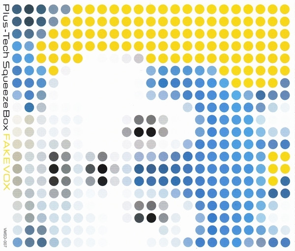
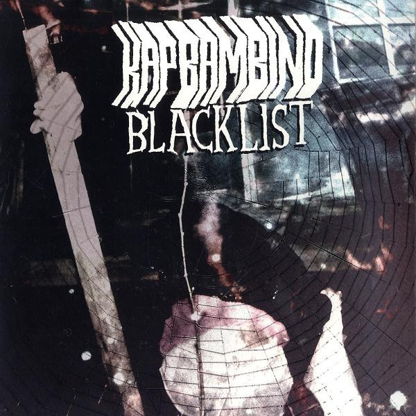
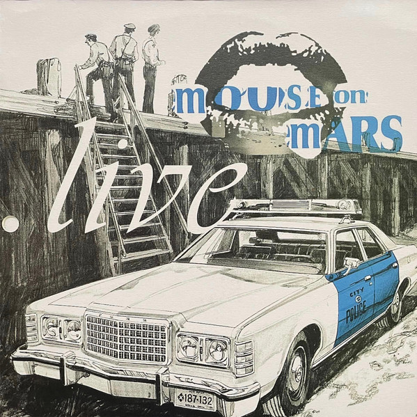
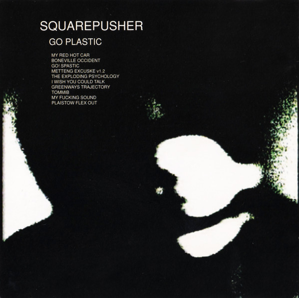
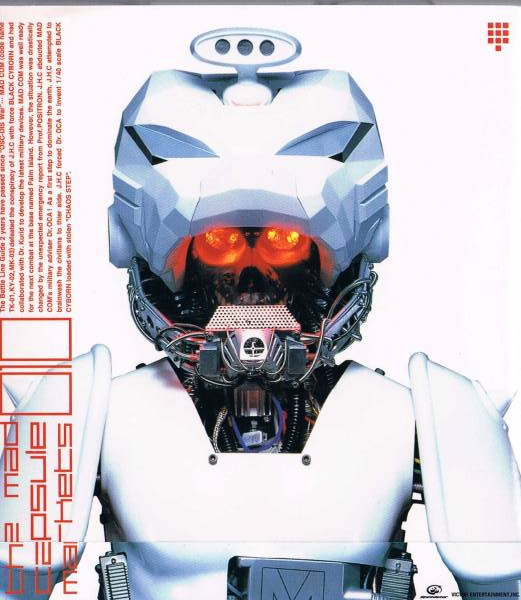
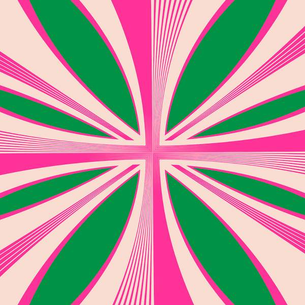
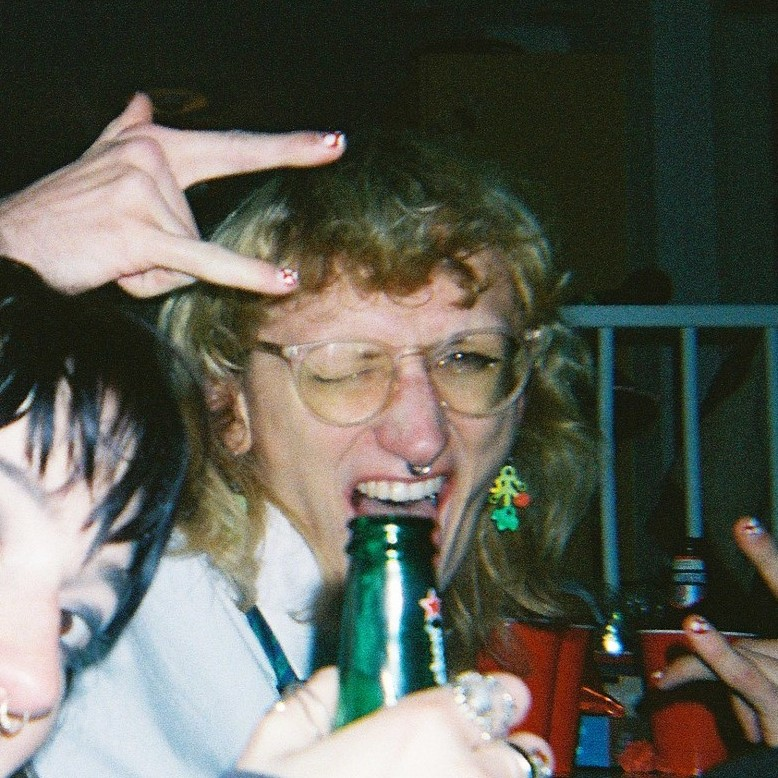

Blog → My favorite music of 2024
When I was growing up, my dad used to play Dave Brubeck in the car when he’d come to pick me up from school on Wednesdays. In high-school, I was listening to Monstercat dubstep on YouTube. In my years as a student I listened to a bunch of electronic music on ad-blocked YouTube Music and started collecting CDs.
These days I still enjoy all of the above, but my flow for finding and listening to music has changed a lot. I primarily find music by browsing record stores and roaming around places like Discogs and Bandcamp. Something I was confronted with when browsing for music more and more, is that there’s no singular place one can listen to it all.
So for me, the move to setting up my own music server made perfect sense to solve that problem. And now that recommendation algorithms and poor accessibility are out of the picture, I feel my interactions with music have gotten a lot more personal and direct.
I’ve listened to a LOT of music this year and I excitedly present my favorite albums I listened to in 2024. All albums come with a one sentence review from my first listen.
Yay music! (/≧▽≦)/

Detrimentalist by Venetian Snares
“A good breakcore. Consider me a freaked out child in the woods.”
- Puk, 25/04/2024
The first Venetian Snares release I ever listened to was “Rossz Csillag Alatt Született “. I believe Detrimentalist is the antithesis to that album and actually a lot of other releases by Aaron. Whereas other VSnare albums have more breathing room and reliance on theatrics, Detrimentalist is a full blast freight train through breakcore jungle texture, rhythm and Aaron f&#$ery.
I sometimes almost feel bad for liking this release so much, especially for that reason. Detrimentalist is Dr. Snares’ vodka; uncomplicated, strong as a motherf$%&er and gets me buzzed every fucking time.

Fakevox by Plus-Tech Squeeze Box
“MAKE MORE MUSIC FUUUUCK”
- Puk, 25/04/2024
I LOVE strongly themed albums like “Mm.. Food”, “Velocity : Design : Comfort”, “Krankhaus” and such. Their setup eases the sensation of being transported into a curated sonic space. It’s convenient that I also happen to like these project’s sonic spaces of course, but regardless.
Fakevox is a texturally amazing, glitchy, poppy, catchy, perfect and plastic world that still feels very tangible. In my mind, this album is a part of that whole Shibuya Kei wave vibe. It’s hilarious, SO PLAYFUL and just all allround amazing.
I want to date this album, I want to be this album and I’m extremely upset that Plus-Tech released “CARTOOOM!” and f&%$ed right off.

Blacklist by Kap Bambino
“F&@^ YEAH GORY DISTORTED FRENCH PEOPLE YELLING”
- Puk, 01/05/2024
In short, this album sounds like that Cybergoth Dance Party video. I love its gnarly distorted drum machine and rave synth textures. I love the fact that every word spoken on it has this extreme French slurring to it.
I actually recently found this album for 4 bucks in the second hand section of my local record store that has (in my opinion, sorry Plato Utrecht) awful curation. Very surprised, lucky, YAY!!!
It’s a monster caffeine sugar rush.

Wacko_ by Cage.Log
“ITS SO FUCKING GOOD FUUUUUUUUUCK YOU DYLAN I CRY EVERY TIME “
- Puk, 01/05/2024
Yeah, it feels a bit hypocritical to put this project on this list because I did play a part in its release. But come the f&*$ on, it is just that good! Wacko_ is so sonically rich, its narrative so beautifully crafted and its experience so tailored to be experienced. Its music, I cannot describe in any other way, than simply beautiful.
I feel that, unfortunately, I’ve developed a bit of snobbiness towards music. I cannot bring myself to enjoy a lot of it for various reasons. Categorically among which is a lot of “songwriter music”. Often times it doesn’t manage to grasp me. There are exceptions to the rule, this album of course and most powerfully so “InorOut”.
That song has layers upon layers of sound, and while that should speak to my tastes, that’s not even why I love it. The words, the emotion that’s packed in that song. It reliably manages to punch my heart and make me cry. God damn those two piano notes before all hell breaks loose.
Dylan, I know that you don’t know how to respond to things like this, but whenever I listen to this album, I’m blown away. My creations feel insignificant in the grand scheme of Wacko_ and I find it surreal that someone as lovingly human as you could create something so divine as this.
Yeah, f*%$ you Dylan. Thank you, PLEASE make more music.

Live04 by Mouse On Mars
“Some really good songs, really good recordings, really nice variations. FUCKING BANGERS ALL ROUND WOOO.”
- Puk, 17/05/2024
I love Mouse On Mars. While I still consider “Parastrophics” to be the best work produced by these silly juke-loving German peeps, I’ve got to acknowledge how sickeningly good Live04 is.
I sometimes feel like there’s two MOMs: The band with Dodo Nkishi and the duo without. Live04 concentrates the best of the former. From the very old synth-heavy space beats (“Diskdusk”, “Frosch”), to the funky, way-too-deep synth-poppings (“Mine Is in Yours”, “Wipe That Sound”).
When Dodo hits “Actionist Respoke” with the “IIIIIIIIII IS JUUUUUUST WHAT YOUUUU SAY YOUUU TOOOO” I cannot help but wriggle. Vielen dank.

Go Plastic by Squarepusher
“The fucking daddy”
- Puk, 03/07/2024
Sometimes you just miss one, I’ve been a huge Squarepusher fan for years now. I think I just believed I’d listened to Tom’s entire discography, but as it turns out I hadn’t. Surprisingly this release had passed me by entirely, and the moment I realized that I immediately acquired the album and hit play.
After getting comfortable with Go Plastic I nearly consider it my favorite Squarepusher release, rivaling even my love for albums like Ultravisitor. It’s such a brooding, unapologetically course album, marvelously interjected by beauties like “I Wish You Could Talk”.
This thing feels bright green.

010 by THE MAD CAPSULE MARKETS
“TEKNOTEKNOTEKNOTEKNOTEKNOTEKNOTEKNOTEKNOTEKNOTEKNOTEKNOTEKNO So good”
- Puk, 02/07/2024
When Atari Teenage Riot hit it big by establishing Digital Hardcore as a popular genre, I feel it inspired a bunch of bands that were previously playing distorted-guitar-musics to hop on that train. One such case is THE MAD CAPSULE MARKETS; starting out as a Punk band, slowing mixing more electronic influences into their sound, culminating in this album.
010 is beautiful Digital Hardcore slop and hits my weak spot for Japanese people yelling.

Britpop by A.G. Cook
“FUCK OFF HOW DOES AG JUST RELEASE A 2 HOUR ALBUM AND HAVE IT BE THIS GOOD. FUUUUUUCk”
- Puk, 02/07/2024
Yeah exactly. How does Alexander Guy fucking Cook just consistently drop these projects that are the length of movies and still have them sound this good???
I loved 7G so it’s no wonder that I’d end up considering Britpop to be among the best of 2024. I think that Britpop and 7G share a lot of DNA, they’re both resonant spaces whose earcandy drive me to insanity.
I know that this is completely false, but I like to imagine there’s a few Brat rejects on this album. Tracks like “Britpop” and “Lucifer” are more likely just excerpts of the sheer time Alex and Charli spend in studio together, making stuff, sweet.
When I look at this 100 minute album, I’ve just got to ask, Guy: Is this all of it? I just know that on that lil MacBook and all of them hard drives you’ve got scattered around there’s like 10 more Britpops. I will one day get ahold of them, you cannot keep them from me.
Bewitched is the ultimate gender euphoria track. R.I.P Sophie. <3
Honorable Mentions
I’ve listened to a ton of music this year. There’s too much music that I loved listening to this year to list neatly. But here’s a few more projects that banged:
- Moshpit - Follow the Loser
- Bygones - Spiritual Bankruptcy
- Toyod Ine - popwasbroken!!!
- JPEGMAFIA & Danny Brown - Scaring The Hoes
- Everyone Is Not Alive by Touch People
- Skrillex - “Gost EP”
- Freak Out Squares - Building Better Bombs
- Robert Lippok - Open Close Open
- M-Beat ft. General Levy - Incredible
- Mouse On Mars - Dimensional People
- DJ Warlord - Droom
- MAD BREAKS Presents: Vocalobreak
- MACINTOSH PLUS - Sick & Panic
- HONDALADY - 303
- hitbox - GLOBAL AND OFFENSIVE
- DALLJUB STEP CLUB - CHECK THE SHADOW
Special thanks to Ma3ke, Ties, Mikkel, Damian, Sytse, Dylan, Robin, Benji, Joran, Konnie, Vivian, Jørgen and whoever I forgot to mention for having great music taste and influencing mine. This year I really enjoyed making a bunch of music too. I’ve got a bunch more projects in the works that didn’t make it this year so be ready for that next year I guess.
Really look forward to the new Clipping album, seeing JPEGMAFIA, seeing Machine Girl next year and surely we’ll finally get another Death Grips release.

Thank you people who make music. I hope to listen to a lot more next year.
- Love, Puk